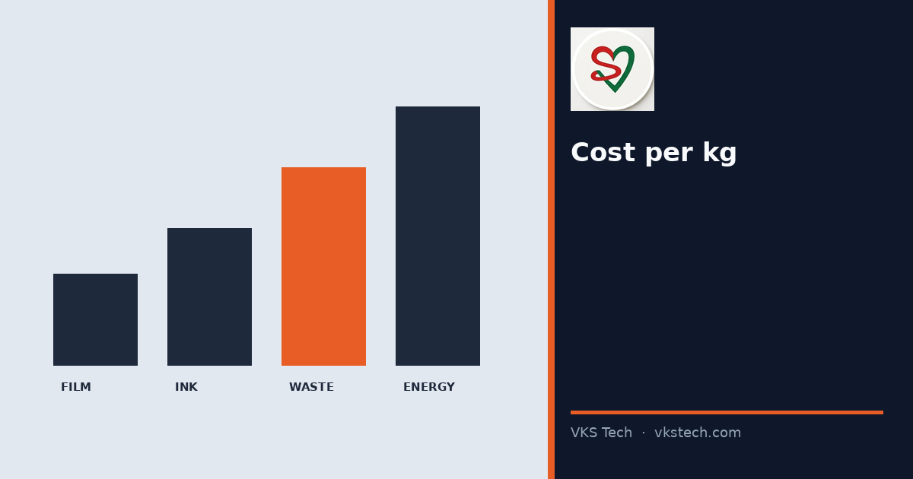
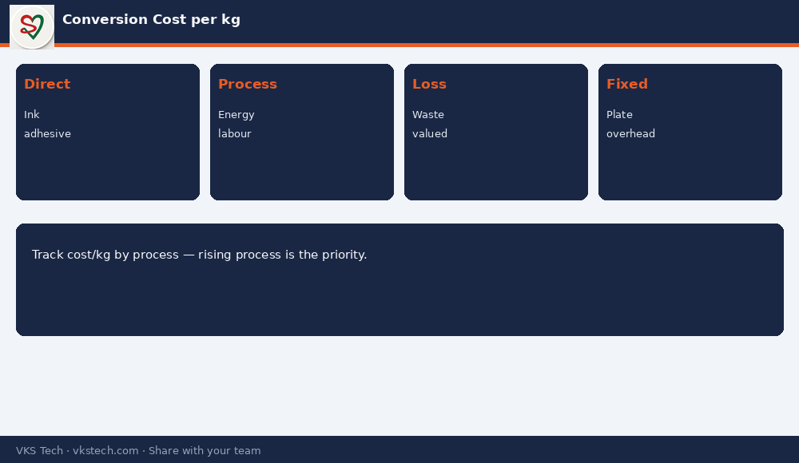

💰 If You Only Know Film Cost, You Do Not Know Your Real Conversion Cost per kg.
📖 10-min read · Costing · PPC + Plant Heads
Conversion cost is everything added after the base film: ink, adhesive, energy, labour, wastage, cylinders/plates amortised, and overhead allocated to the job. Without this, price decisions and “busy but not profitable” months stay unexplained.
📌 Cost Buckets
- Direct: ink, adhesive, solvents, cores, cartons
- Process: energy, machine time, labour
- Loss: wastage % valued at material + process cost
- Fixed share: plates/cylinders, maintenance, overhead

💡 Use: Track conversion cost per kg by process (print / lam / pouch). The process with rising cost per kg is your improvement priority — not only the one that looks busy.
💰 अगर आपको सिर्फ फिल्म लागत पता है, तो असली कन्वर्जन लागत प्रति किलो नहीं पता।
📖 10-मिनट पढ़ें · कॉस्टिंग · PPC + प्लांट हेड
💡 उपयोग: प्रोसेस-वाइज कन्वर्जन लागत/किलो ट्रैक करें। बढ़ती लागत वाला प्रोसेस सुधार की प्राथमिकता है।